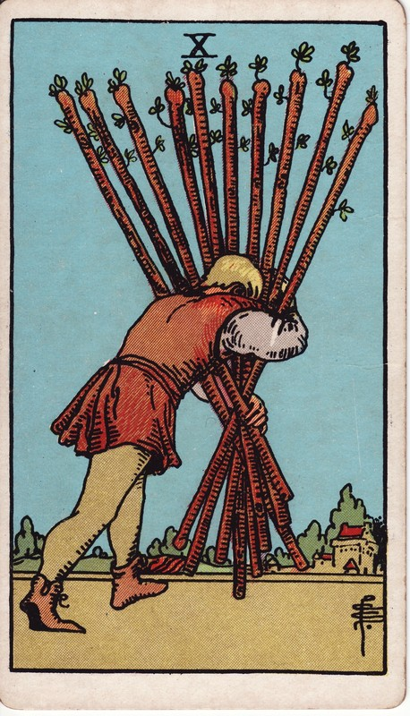

人物抱着十根权杖走向城镇，终点已近却看不清前路，表现完成前的重负与视野受限。
象征推演：伟特指出，收获与成功在前，负担随之而至。男子为何如此疲累？只懂「向前冲」的权杖作风，却缺思考与规划——不敢说不、同时揽下太多，学会拒绝就能明显改善。
目标快要完成，但你承担的重量已经遮挡视线。责任感值得肯定，分配方式却必须改变。
你可能正在卸下重担，也可能因为过载而突然放弃全部责任。可持续的做法是重新分配，而非从全扛到全丢。
学习提示：十是元素的满载；权杖十问热情何时变成了负担。
正位：A card of many significances, and some of the readings cannot be harmonized. I set aside that which connects it with honour and good faith. The chief meaning is oppression simply, but it is also fortune, gain, any kind of success, and then it is the oppression of these things. It is also a card of false-seeming, disguise, perfidy. The place which the figure is approaching may suffer from the rods that he carries. Success is stultified if the Nine of Swords follows, and if it is a question of a lawsuit, there will be certain loss.
逆位：Contrarieties, difficulties, intrigues, and their analogies.
出处：A.E. Waite《The Pictorial Key to the Tarot》(1910)，公有领域。古典断语反映二十世纪初的读法，与上方现代心理向解读互为古今对照；重大议题请以自我觉察为先，牌不做医疗/法律/财务建议。
塔塔🔮の心灵疗愈室 · 牌义百科为站内容自留地：中文解读自有，古典断语公有领域署名引用。https://cindysd.github.io/tata-public/